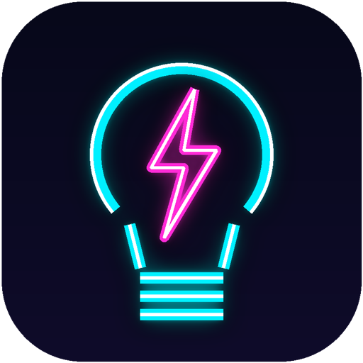

FESTILUMIERES
Turn your room into a sound and light show. Pick a scene: sound, screen and your smart lights come alive together.
No subscription, no account- Microphone modePlay your music (Spotify, radio, speaker…): your lights follow its beat, live.
- Right on the beatFestiLumieres finds the tempo and sends each flash slightly early, so it lands at the right moment.
- Colors follow the energyWarm tones when it's calm, vivid colors when the track takes off.
- 18 scenesThunderstorm, fireworks, disco, hyperspace, horror movie, taiko drums…
- Your smart lightsPhilips Hue, WiZ, LIFX, Govee and Nanoleaf, found automatically on your Wi-Fi.
- Back to normal on STOPOne tap on STOP and your lights return to their exact color and brightness.
No smart lights? Every scene still works, with sound and on-screen effects.
Made for everyone. Some scenes flash: a « reduced flashing » mode slows and softens them for people sensitive to flashing light. No account, no ads, no server: everything happens on your device and your Wi-Fi. Privacy policy
The app is currently in French. A question? See the Support page.